Chapter 2 focused on what we can analyze to make sound investment decisions. With that knowledge, it’s time to show how to collect and explore data. Some data analysts claim that financial data is cleaner than data from other domains. Still, even with superb data, we need to invest time in preparing it for analytical algorithms and determining how to extract insights most efficiently.
This chapter teaches you how to gather financial data using Python. We’ll focus on yfinance, a powerful open source library for scraping data from sources such as Yahoo Finance, Google Finance, and Finviz.
While yfinance is excellent for our initial data exploration, we’ll also discuss its limitations and explore more robust, production-ready alternatives. All the libraries we cover are either free or offer a freemium model.
We’ll start by examining the unique characteristics of financial data. Then, you’ll learn to use these Python libraries to collect it. With this knowledge, you’ll be ready for the first use case in chapter 4.
Many data projects, independent of a specific domain, often raise data quality issues, making it difficult to predict whether the provided facts and numbers lead to insights that enable better investment decisions. One advantage of financial data is that it’s regularly audited, and financial statements are required to meet predefined accounting standards. Whether data analysts receive data from free or paid sources, the information in the data represents the information that a company’s accountants have officially reported.
This high-quality data is unavailable to analysts working with data in other fields. Data scientists working with machine data from factories are more likely to face issues where defective sensors can mismeasure data or multiple unforeseen environmental conditions might affect results.
Still, people working with financial data may face different challenges in interpreting data. The purpose of the obligatory accounting statements is to provide insights about a company’s economic situation. However, different accounting strategies may conceal corporate problems or exaggerate profits. How accountants present numbers in detail can lead to varying interpretations of a company’s results.
But before we collect the data, let’s try to classify it first. To analyze financial assets, we can divide the data into three categories:
Note AI algorithms that analyze human emotions in video and audio streams demonstrate a potential future for investment analysis. For instance, by processing footage of a company’s general assembly, these AI tools could detect whether employee morale is more positive or negative than anticipated. Most people will likely agree that this also raises ethical questions.
Fundamental, technical, and nonfinancial data differ fundamentally (no pun intended). While fundamental analysis is primarily based on comparing financial data between companies within an industry to identify good investment opportunities, technical analysis is used to make quick trading decisions that benefit from bullish or bearish market trends. The next step is to look at the origins of the data.
Before we process data with Python, let’s explore some financial platforms that provide data through a user interface (UI). Although we could load everything into Python data structures right away, it often helps to use these platforms to preselect what to explore in depth.
Many financial analysis platforms help investors make better decisions by providing insights into various assets. The scope of these platforms can differ significantly: some focus on a single asset class, such as stocks or cryptocurrencies, while others limit their coverage to specific geographic regions.
Note We’ll focus on stocks in this chapter and address bonds and crypto in later chapters.
According to various sources, globally, there are between 47,000 and 58,000 publicly listed companies. Given this vast universe, one of the primary functions of financial platforms is to help users narrow down choices efficiently. This is where stock screeners come in. A stock screener is a tool that allows investors to filter listed stocks based on customizable criteria and displays relevant information onscreen to support informed decision-making.
Imagine you’re an investor with a strong understanding of software companies. While you already hold many US stocks, you’re considering diversifying internationally. To reduce risk, you focus on companies that are “too big to fail”—industry giants with massive market capitalizations. Your strategy is to identify potential candidates and then conduct a more in-depth analysis of their software offerings and market opportunities.
Many financial analysis platforms offer screeners that allow investors to filter stocks based on specific criteria. While these tools often share similar features, investors typically choose based on personal preferences. In this book, we demonstrate how to create a preselection using the Finviz platform (https://finviz.com).
In the example shown in figure 3.1, we screen for technology companies outside the United States with a market capitalization of more than $200 billion, matching the “mega-cap” category. You can access this filter directly at https://mng.bz/0zJW. The results may vary slightly from those captured in the screenshot on June 16, 2025.
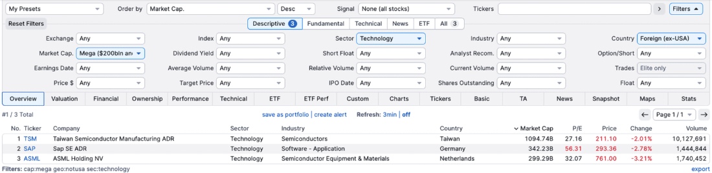
As shown in the figure, stock screeners allow users to filter by various criteria, functioning like data mining tools. Investors can drill down into individual companies to explore detailed information. For example, clicking on the link for SAP provides access to the company’s key financials and other relevant data. Figure 3.2 shows SAP’s fundamentals, illustrating just one example of what can be uncovered during the screening process. Of course, the level of detail and presentation varies across different financial platforms.
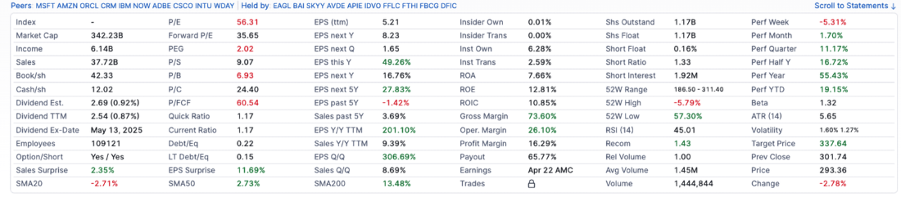
A stock screener is like a landing zone or home base for investors. When individual investors seek specific information about stocks, the platform might offer advisory services or a more refined analysis as a paid subscription feature. Table 3.1 categorizes financial platforms.
|
Platform category
|
Examples
|
Summary
|
|---|---|---|
| Finance pages of a search engine provider |
Yahoo Finance, Google Finance, or MSN Money |
They provide financial data and insights without asking users to pay for a subscription (except for Yahoo Finance, which offers a premium subscription). In many cases, open source developers create libraries to scrape data from the platforms to provide that data to programmers. The yfinance library is a good example of such a library. |
| Financial advisory platform for private investors |
Seeking Alpha, The Motley Fool, Morningstar, Ziggma, Zacks, Koyfin, Stock Rover, Empower, Simply Wall St, TipRanks |
They provide insights about financial assets on a tiered subscription model. With yearly subscription packages, typically ranging from $10 to $350 for standard plans, you gain access to more in-depth insights. Only a few advisory platforms provide an API to programmers. |
| Financial data providers for fintech start-ups |
EODHD, Alpha Vantage, OpenBB |
They provide financial data through APIs. Most of them also offer a freemium version, providing limited access to economic data. Prices for commercial packages, which include more data, more requests, and faster access, vary but are often in the range of $240 to $1,200 per year. |
| Commercial products for large investment firms |
Bloomberg Terminal, Refinitiv, MSCI |
These products normally exceed the budget of individual investors. They provide an immense amount of data and insights for analysts and fund managers. |
We could use libraries for web scraping and collect financial information from these platforms if they don’t offer an API. However, using a web scraper means cleaning data and facing the risk of unpredictable errors, so we want to load the data into our environment using an API. Before doing that, we should address some basics about how we want to process financial data.
Pythonistas and data scientists have worked with Jupyter, Databricks, and similar platforms that provide notebooks to users. A notebook is an environment where you can run code in single cells and use the results from those cells in other cells, providing an interactive environment for engineers.
The appendix includes a section explaining how to install the relevant tools necessary for working with data, including Python libraries. However, addressing “application versus notebook” in advance makes sense. Many software engineers may consider themselves app-centric. If they know they can collect and process data, they might also be tempted to build a UI to display everything to users. In a later chapter, we demonstrate how to do this using Streamlit; however, this is often not the primary approach to exploring financial data for personal investment decisions.
For personal financial research, creating frontends might be an unnecessary overhead. Each investment assessment is a unique research project that may require research in different data sources. As the goal of a personal investment decision is to buy, sell, or hold based on data, numbers in a console are good enough. All programmers might need are data science notebooks, in which they can write down an investment hypothesis and start exploring data to prove or disprove their theses. Occasionally, they might rerun some cells with different data, or they might copy and adjust them for alternative analyses.
In this chapter, we’ll introduce libraries and code snippets to analyze some core investment aspects of companies. In chapter 4, we’ll continue to apply this knowledge to identify concrete investment opportunities. Until then, become familiar with the development environment of your choice and become accustomed to working with data science notebooks. The code presented in this chapter can also be found in the book’s downloads and the Git repository.
Pick a random book covering financial data exploration with Python or look for relevant code snippets online, and, most likely, you’ll find code that collects data through the yfinance library. This library is the perfect starting point for exploring financial data by experimentation.
The yfinance library enables developers to load a wide range of data from the Yahoo Finance platform into Python data structures, making yfinance the best choice for programmers getting started with exploring financial data. We can use yfinance for technical and fundamental analysis.
Note As you know, a stock ticker is a unique company identifier on a stock exchange. In chapter 2, for example, you saw NVDA for Nvidia, AAPL for Apple, and so on. For international exchanges, platforms add an acronym for the stock exchange. So, if we use Yahoo Finance, we find Rolls-Royce listed as RR.L on the London Stock Exchange (LSE), or Allianz SE as ALV.DE on the Frankfurt Stock Exchange. We need to watch out for mismatches, as there is, for instance, a ticker ALV registered on the New York Stock Exchange (NYSE). Unfortunately, the acronyms to identify stock exchanges may differ between APIs. We’ll show in a later example that another library, EODHD, uses the logical LSE as an identifier for the London Stock Exchange.
Programmers can retrieve a company’s accounting data, introduced in chapter 2, using yfinance and the code snippets shown here. This DataFrame contains all the information a company provides when reporting this data, such as aggregated sales figures over time. In this example, we used Microsoft (MSFT is Microsoft’s stock ticker, a unique identifier for the company on the NASDAQ stock exchange, where Microsoft is listed):
import yfinance as yf
microsoft = yf.Ticker('MSFT')
microsoft.income_stmt
microsoft.balance_sheet
microsoft.cash_flow
For each of the fetched properties of the microsoft object, the returned object is a DataFrame representing an accounting statement with the reporting dates as columns and the metric for each report as a row. Table 3.2 shows the output of the DataFrame returned by the property income_stmt. The properties balance_sheet and cash_flow would return data in the same data structure, but with different values representing the accounting statements.
|
2024-06-30
|
2023-06-30
|
2022-06-30
|
2021-06-30
|
|
|---|---|---|---|---|
| Tax effect of unusual items |
-99918000.0 |
-2850000.0 |
43754000.0 |
180160797.164637 |
| Tax rate for calcs |
0.182 |
0.19 |
0.131 |
0.138266 |
| Normalized EBITDA |
133558000000.0 |
105155000000.0 |
99905000000.0 |
83031000000.0 |
| Total unusual item |
-549000000.0 |
-15000000.0 |
334000000.0 |
1303000000.0 |
| Total unusual item excluding goodwill |
-549000000.0 |
-15000000.0 |
334000000.0 |
1303000000.0 |
| Net income from continuing operational net |
88136000000.0 |
72361000000.0 |
72738000000.0 |
61271000000.0 |
| Reconciled depreciation |
22287000000.0 |
13861000000.0 |
14461000000.0 |
11686000000.0 |
| Reconciled cost of revenue |
74114000000.0 |
65863000000.0 |
62650000000.0 |
52232000000.0 |
| EBITDA |
133009000000.0 |
105140000000.0 |
100239000000.0 |
85134000000.0 |
| EBIT |
110722000000.0 |
91279000000.0 |
85779000000.0 |
73448000000.0 |
| Source: yfinance |
We can access the specific information in financial account statements by referring to the data and the specific identifier of the information we’re looking for, as shown in the following:
microsoft.income_stmt["2024-06-30"]["EBITDA"]
Users who explore the content of an object’s attribute can iterate through columns representing report filing dates. Programmers interested in the quarterly results of the three account statements can also use the same approach by calling an attribute with the identifier quarterly_ followed by the identifier of the accounting statement, as shown here:
microsoft.quarterly_income_stmt microsoft.quarterly_balance_sheet microsoft.quarterly_cash_flow
In chapter 2, we introduced several financial ratios. Collecting financial ratios of companies with Python is easy, as most ratios can be obtained through attributes from simple objects populated using the yfinance functionality. We continue with the object microsoft. The microsoft.info property is an object of the type dictionary. Converting it into a Pandas Series allows us to access the information referenced by the dictionary’s keys as attributes of the newly generated object:
import pandas as pd info = pd.Series(microsoft.info)
This info object contains numerous attributes related to corporate information, including headquarters address and financial ratios, such as the P/E value. When writing this book, the library offered 132 attributes to explore. The following code returns the details of what can be queried:
print(', '.join(info.keys()))
Accessing that one attribute is a one-liner. Next, we collect Microsoft’s current share price:
info.currentPrice
We define a small helper function to collect the company’s ratios. The following snippet returns a DataFrame containing a list of ratios we pass as identifiers:
import pandas as pd
import yfinance as yf
def collect_ratios(tickers: list, ratios: list):
rows = []
for ticker in tickers:
info = yf.Ticker(ticker).info
row = [ticker] + [info.get(ratio, None) for ratio in ratios]
rows.append(row)
return pd.DataFrame(rows, columns=["Ticker"] + ratios)
In chapter 2, we presented various query results in tables. The collect_ratios method makes it easy to get multiple ratios. In the following code, we collect the current and quick ratios of four companies: Walmart (WMT), Altria (MO), NVIDIA (NVDA), and Salesforce (CRM). We also add the sector and industry to the output:
collect_ratios(["WMT", "MO", "NVDA", "CRM"], ["sector", "industry", "currentRatio", "quickRatio"])
The output of these methods can be reviewed in chapter 2, as we’ve used this method to collect all the data for the ratios that have been introduced there. Using this method, we can collect more ratios and analysis using attributes, such as debtToEquity, forwardPE, trailingPE, pegRatio, priceToSalesTrailing12Months, priceToBook, beta, or recommendations_summary. The book contains a data science notebook called Ratios, which includes a set of reference commands to generate the results for the ratios shown in chapter 2. Feel free to explore them and choose companies that interest you.
It’s time to discuss some ratios we introduced in chapter 2 that aren’t provided as attributes. First, we need to collect a ticker. We’ll also collect references to the latest accounting statements as they are returned to us, in a DataFrame where columns represent the reporting dates:
import yfinance as yf
company = yf.Ticker("MSFT")
col_latest_inc_stmt = company.income_stmt.columns[0]
col_latest_bs = company.balance_sheet.columns[0]
As shown in table 3.3, we can use code to collect the information. Note that we reference specific financial accounting documents at a particular date, and you may need to adjust the dates accordingly.
|
Ratio
|
Code
|
|---|---|
| Return on assets |
company.income_stmt[col_latest_inc_stmt]["Net Income"]/company.balance_sheet[col_latest_bs]["Total Assets"] * 100 |
| Return on equity |
company.income_stmt[col_latest_inc_stmt]["Net Income"]/company.balance_sheet[col_latest_bs]["Stockholders Equity"] * 100 |
| Profit margin |
company.income_stmt[col_latest_inc_stmt]["Net Income"]/company.income_stmt[col_latest_inc_stmt]["Total Revenue"] * 100 |
| Asset turnover ratio |
company.income_stmt[col_latest_inc_stmt]["Total Revenue"]/company.balance_sheet[col_latest_bs]["Total Assets"] |
| Debt-to-equity |
company.balance_sheet[col_latest_bs]['Total Debt']/company.balance_sheet[col_latest_bs] ['Stockholders Equity'] |
Another interesting fact is the development of ratios over time. Apple has a higher debt-to-equity (D/E) ratio than its peers, which is likely related to accounting practices. However, it could be a bad sign if the last value suddenly rises significantly. The following code indicates that this ratio fluctuates within years (in 2021, 2.16; in 2022, 2.61; in 2023, 1.78; and in 2024, 1.87), and we can conclude that this D/E ratio won’t prevent us from making an investment decision:
company = yf.Ticker("AAPL")
for i in range(0,4):
print(f"{company.balance_sheet.iloc[:,i].name}:
{company.balance_sheet.iloc[:,i]['Total
Debt']/company.balance_sheet.iloc[:,i]['Stockholders Equity']}")
We can use yfinance to examine time series data. In the following example, we load Microsoft’s historical stock data into a DataFrame for one year, as shown in table 3.4. In the following code, we load the data for one year by executing this query:
import yfinance as yf
historical_data = yf.Ticker("MSFT").history(start="2024-05-08",
end="2025-05-08
historical_data
|
Date
|
Open price ($)
|
High price ($)
|
Low price ($)
|
Close price ($)
|
Volume
|
|---|---|---|---|---|---|
| 2025-05-07 00:00:00-04:00 |
433.05 |
437.32 |
430.32 |
432.56 |
23,295,300 |
| 2025-05-06 00:00:00-04:00 |
431.41 |
436.93 |
430.38 |
432.52 |
15,104,200 |
| 2025-05-05 00:00:00-04:00 |
432.08 |
438.69 |
431.32 |
435.37 |
20,136,100 |
| 2025-05-02 00:00:00-04:00 |
430.95 |
438.63 |
429.20 |
434.48 |
30,757,400 |
| 2025-05-01 00:00:00-04:00 |
430.32 |
436.19 |
424.12 |
424.62 |
58,938,100 |
| Source: yfinance data from June 8, 2025 |
Occasionally, we prefer to have exact time intervals; in the following code, we show how to collect data for 2023. The source code output here would return the same data structure as in table 3.4, with different dates and values:
import yfinance as yf
hd_msft_2023 = yf.Ticker("MSFT").history(start="2023-01-01",
end="2023-12-31")
hd_msft_2023
The everyday use case uses technical data to explore how stock prices evolve: What is the spread between highs and lows, and how volatile is the stock? The more volatile the share price has been in the past, the higher the likelihood that it will continue to be erratic.
Note Past performance doesn’t guarantee future results. However, if you take several stocks with stable past performance and put them in a portfolio, you can absorb single stocks performing below expectations. Providing risk-optimized portfolios is often the domain of exchange-traded funds (ETFs).
In chapter 2, we concluded that the share prices of companies from the consumer staples sector, such as Coca-Cola, are likely more stable. This sector represents goods for everyday needs, but consumers will also purchase during crises. If we compare Coca-Cola with a start-up, we can see this difference in the numbers. Let’s load the required data and compare Coca-Cola with NuScale (SMR), a company focusing on building small modular reactors. We also add Apple (AAPL) to the portfolio to diversify our baseline with a third company:
import yfinance as yf hist_prices_2023 = yf.Tickers(["AAPL", "SMR", "KO"]).history (start= "2023-01-01", end= "2023-12-31")
The share prices of different stocks don’t give us a basis for comparing stocks. Company A might be traded at $1,000 per share, and Company B at $10. The price is just a number without the number of shares outstanding. Companies with high share prices often consider a share split to reduce the cost of purchasing a single share. If Company A decided to split the shares in a 1:10 ratio, and you held 1 share, after the split, you would have 10 shares of stock with a share price of $100. Therefore, we need to set a starting date for our comparison and assume the price of each company starts at 100%, from which we track the price changes in percentage terms.
NuScale’s share price could have been better in 2023. We’ll plot the share prices as a percentage over time to illustrate this. The following code extracts the closing prices and creates a DataFrame with the percentage changes for each ticker at the beginning of the period (you may need to install the Matplotlib library):
def plot_closing_prices(data):
import matplotlib.pyplot as plt
close_prices = data["Close"]
price_change_in_percentage = (close_prices / close_prices.iloc[0] * 100)
price_change_in_percentage.plot(figsize = (12,8), fontsize = 12)
plt.ylabel("Percentage")
plt.title(f"Price Chart", fontsize = 15)
plt.show()
By calling this method with the DataFrame as a parameter, such as by plot_closing_ prices(hist_prices), we can generate a plot, as shown in figure 3.3.
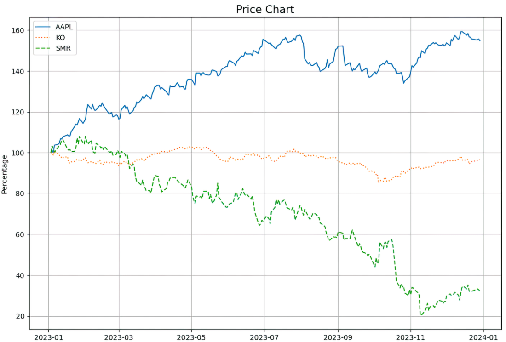
If you looked purely at 2023, you might be tempted to say that it would be wise to invest in Apple and short sell NuScale. However, if you look at the results of 2024, in which the share price of NuScale soared, this would have been a disastrous decision. Figure 3.4 shows the results if we picked the stock starting from November 22 and one year back. We collect the data using the stock tickers as identifiers and then call the method to plot the graph:
import yfinance as yf hd_nvda_smr_aapl_1yr = yf.Tickers(["AAPL", "SMR", "KO"]).history (start= "2023-11-22", end= "2024-11-22") plot_closing_prices(hd_nvda_smr_aapl_1yr)
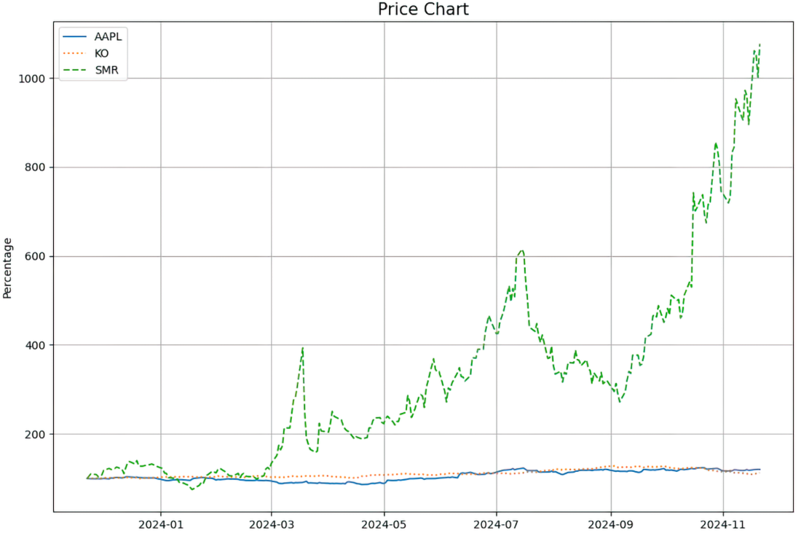
In chapter 4, we’ll explore more details on how to identify other companies, such as NuScale, that can grow stronger than the market. Let’s begin by exploring the market returns. We have the closing price of a share and can compare it with the previous day’s price. With that, we can calculate daily returns:
simple_returns = hist_prices_24 ["Close"].pct_change (fill_method=None).dropna() simple_returns
Returns calculated this way are called simple returns. A second method for calculating returns is using logarithmic returns. Instead of subtracting the end price from the starting price, we use log functions:
import numpy as np log_rets = hist_prices_24["Close"].apply(lambda x: np.log(x / x.shift())).dropna() log_rets
Logarithmic returns have found broad application in calculating returns compared to simple returns, which we would obtain if we simply subtracted the previous day’s closing price from the current day’s closing price. Logarithmic returns differ in that they measure the continuous compounded rate of returns, which is more beneficial for statistical analysis. We can also plot the returns in a histogram to discover how often we had outliers (see figure 3.5 for the results):
log_rets_2023 = hist_prices_2023["Close"].apply(lambda x: np.log(x / x.shift())).dropna() log_rets_2023.hist(bins=35, figsize=(10, 6))
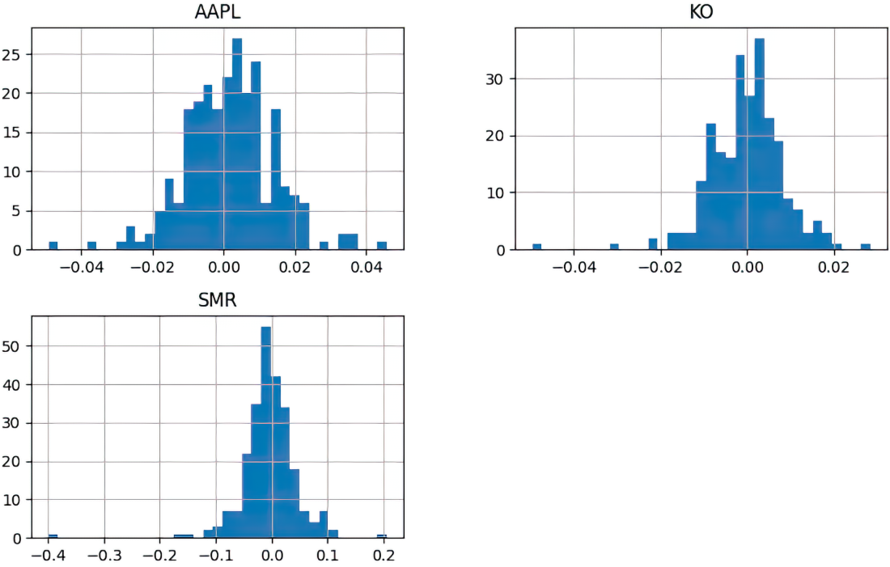
To finalize our primer on technical analysis, let’s look at three standard metrics: mean, standard deviation, and variance. Again, we use a snippet here to visualize the differences between these statistical methods (see the results in table 3.5):
summary = log_rets_2023.agg(["mean", "std", "var"]).T summary.columns = ["Mean", "Std", "Var"] summary
|
Company
|
mean
|
std
|
var
|
|---|---|---|---|
| Coca-Cola |
-0.035349 |
0.134959 |
0.018214 |
| Apple |
0.442217 |
0.199222 |
0.039690 |
| NuScale |
-1.149094 |
0.799615 |
0.639385 |
| Source: yfinance 2023 data |
The mean is the average stock price over the given period, representing the “central” value of the dataset. Variance measures how far each price deviates from the mean in squared units. The standard deviation is the square root of the variance, bringing the measure back to the same units as the prices.
The data shows that NuScale exhibits significant fluctuations. However, someone who in 2023 made a short-term bet on Coca-Cola would have been disappointed as well. These metrics already give us an idea about the performance of stocks. In later chapters, we’ll delve into more detail and demonstrate how to determine if stocks in a portfolio correlate.
Digging into the source code of the yfinance code on GitHub, we see that it uses web scraping frameworks, such as Beautiful Soup. On the landing page, the author introduces this library as a wrapper for Yahoo’s internal API, highlighting that Yahoo doesn’t maintain the yfinance library. For developers who rely on getting valid results, this scenario poses a risk. Yahoo is unlikely to inform the maintainers of an open source product that scrapes its data about upcoming changes. In the worst case, Yahoo might even decide, at some point, to implement anti-scraping methods to restrict access to its financial data at any time.
As shown in figure 3.6, sustainability data wasn’t supported with a version of yfinance in the middle of 2024. Programmers who wanted to incorporate sustainability data into their analysis would have to use a different library.
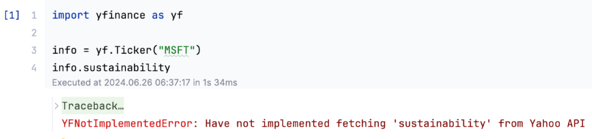
The good news is that with the latest version of yfinance, this problem disappeared. Still, yfinance depends on Yahoo’s benevolence, so it’s essential to know alternative products.
For many personal investment assessments, yfinance is just fine. While commercial libraries primarily target companies seeking to develop their financial products, there are still compelling reasons for private investors to collaborate with these libraries.
The freemium model of commercial libraries encompasses certain aspects of analysis for personal use. If, for instance, the limitation of a free plan is that some data arrives delayed or you have a limited quota of API calls, you might still run some algorithms on stocks in your portfolio. In this book, we primarily use yfinance, but in some examples later, we’ll use some of these commercial libraries in their freemium versions, where it makes sense.
Note Commercial libraries require you to create API keys. In the appendix, we show a general approach to working with API keys.
Before we explore commercial libraries, let’s see how the ideal data provision works. Scraping data from a UI, as in yfinance, adds risks and overhead. The moment the UI structure changes, we may need to adjust our code to scrape the platform. One risk that users of yfinance face is that Yahoo could change its policy to allow an open source library to scrape its data. While we can transition as private investors to a different library, some of us prefer not to make that effort and are ready to pay a small sum for a commercial product, especially if it helps us generate better returns.
The root for technical data is the exchange that lists the stocks we’re interested in. As we have many exchanges, various entities provide data from different sources. Don’t forget that we also have international exchanges, in addition to US exchanges, and collect data from all over the world. Each of these exchanges may provide different APIs and standards. We need to dedicate some effort to maintaining the data collection process if we aim to build a commercial library that provides data from all exchanges.
Fundamental data is extracted from accounting statements; the best source is to load data from those entities where the data is filed. This information should be available to the public anyway. Let’s examine figure 3.7, which illustrates a reference process.
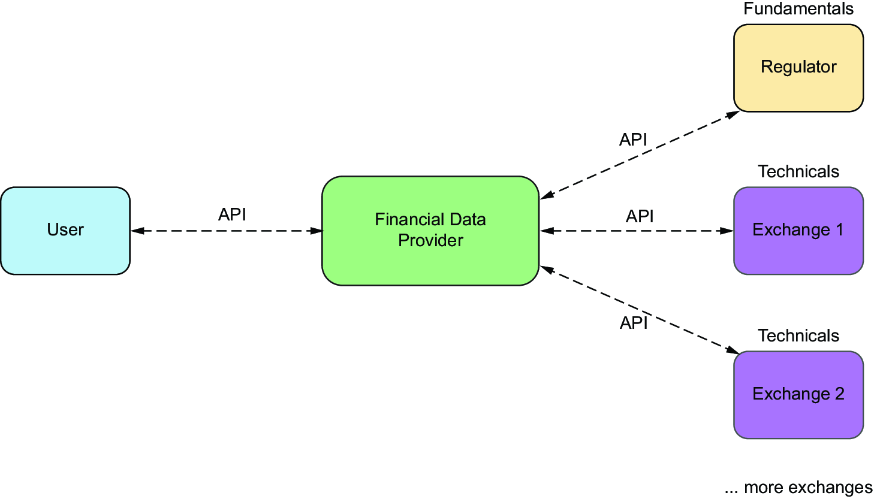
Data providers collect data from exchanges and government agencies. While accounting statements are filed quarterly, share prices change frequently during an exchange’s opening times, so data from exchanges is likely a streaming source.
Note We can integrate generative AI (GenAI) platforms into our source code, submit prompts, and interpret results using frameworks such as LangChain. Large language models (LLMs) and AI agents will eventually transform the way we analyze investments. For now, being able to collect data to obtain reproducible results deterministically is a use case that GenAI hasn’t yet replaced.
Many companies provide financial data to consumers. Some, such as Refinitiv and Morgan Stanley, are focused on business-to-business (B2B) companies. In this book, we focus on four providers that may be of interest to start-ups, as listed in table 3.6.
|
Platform
|
Packages
|
|---|---|
| Finviz |
Elite subscription costs $24.96 per month. |
| EODHD |
Packages range from $0 to $199.00 per month. |
| Alpha Vantage |
Packages range from $0 to $249.99 per month. |
| OpenBB |
Pricing isn’t disclosed. |
Finviz is a popular financial platform best known for its feature-rich stock screener on the platform’s webpage, as shown in figure 3.8. The major downside of this platform is that it only provides data for companies listed on US exchanges. Because Finviz is popular among investors and often featured in finance training videos, it still makes sense to introduce the API to users who plan to invest only in the United States and appreciate the stock screener’s richness. However, we won’t use this API for samples in the book.
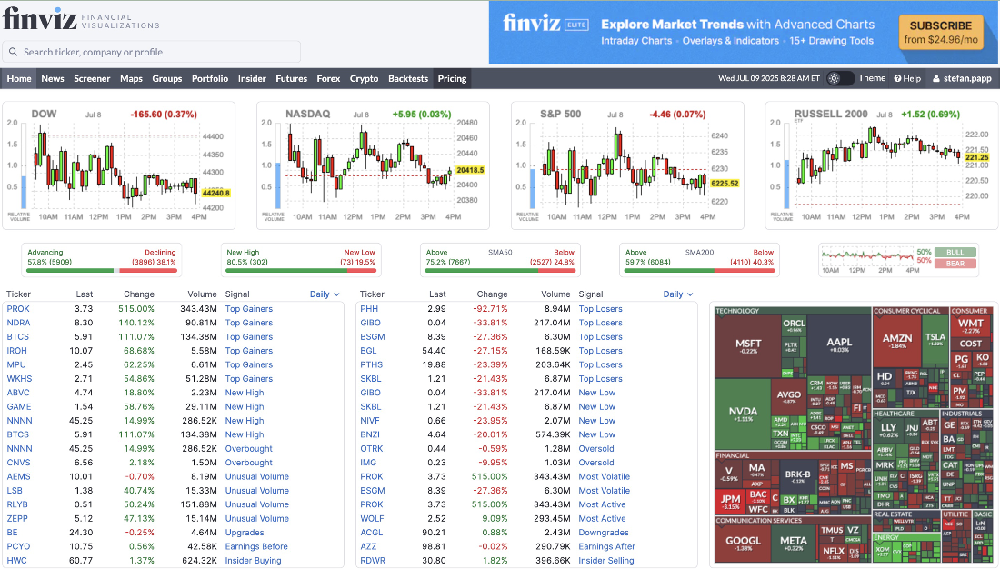
Finviz offers a paid subscription called Finviz Elite, which offers an API. You can set up an authentication token to parse the screener, as shown in figure 3.9.
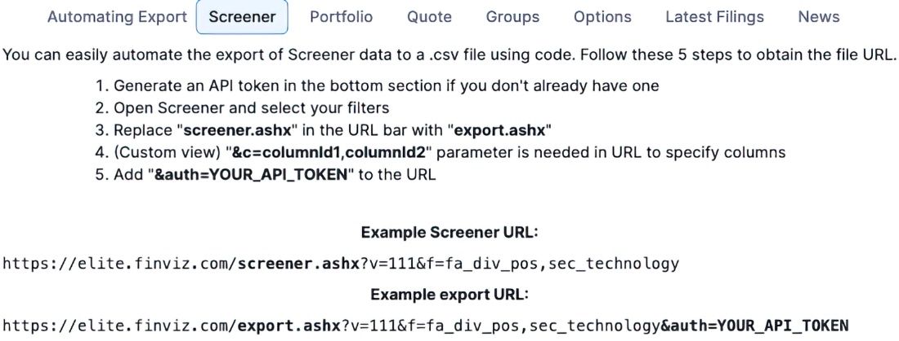
After generating a token, we can access stock data. In this example, we can use the following code to access Finviz and export data to a CSV file. We use a REST API to collect information about the stock. It exports all data based on predefined filters, allowing us to collect fundamental data. Note that to execute the following code, you need to define a variable token that contains your access token. This token is required for multiple requests to collect data from Finviz:
import requests
URL = f"https://elite.finviz.com/export.ashx?[allYourFilters]&auth={token}"
response = requests.get(URL)
open("export.csv", "wb").write(response.content)
The commercial Finviz API also lets users collect data for the portfolios they create on the platform. Figure 3.10 shows a sample portfolio in Finviz. A portfolio is a list of stocks a user tracks to which they can add the number of shares they own. With that, you can quickly run a personalized portfolio analysis if you’ve already tracked your portfolio on Finviz.
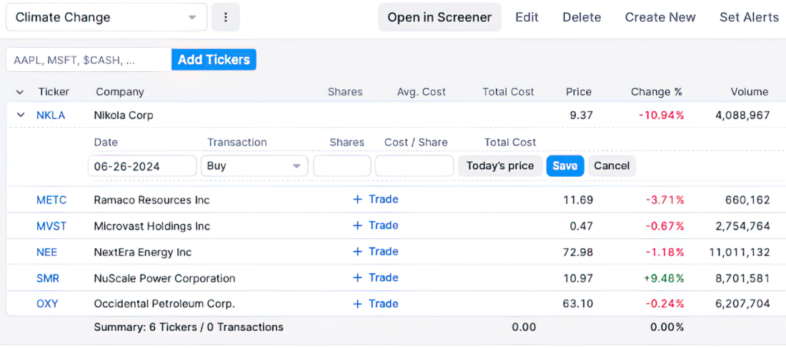
A unique ID identifies every user portfolio. Using the paid Finviz API, users can collect data via the following URL by passing the portfolio ID as a variable:
https://elite.finviz.com/portfolio_export.ashx?
pid={pid}&o=price&auth={token}
Python Package Index (PyPI) lists alternative and free libraries that scrape Finviz data without using Finviz’s paid service. These libraries follow the same strategy as yfinance: They scrape data from the web and return data in Pandas DataFrames. These libraries also share the same risks as yfinance. If the financial platform deploys anti-scraping methods, the libraries become unusable.
Note Finviz users might observe that stocks of companies with a headquarters outside the United States are displayed, even though Finviz only supports US stock markets. For example, users may be able to explore a Danish company that produces weight loss drugs (Novo Nordisk), but they don’t see a large windmill producer from Denmark (Ørsted A/S). The reason is American Depositary Receipts (ADRs), which mirror a stock from a foreign exchange to the US exchange. However, this vehicle has downsides, including dividend custody fees and other risks.
The paid Finviz API may be a suitable alternative for investors who primarily use US stock exchanges and want to avoid potential long-term risks associated with incompatibilities with open source libraries. Still, we must continue our search, as we need a library that covers a wide range of stock exchanges.
Finviz and yfinance, the libraries we’ve explored so far, attract users with powerful UIs that provide stock screening functionality and add libraries to collect data as an additional feature. EODHD, in contrast, is a platform where data provision is the primary business model.
EODHD offers a freemium model that provides historical data from the previous year. It’s limited to 20 API calls per day, which may be helpful to private investors who run analyses on their data infrequently. The paid subscription helps programmers build a product that expects many API calls from clients, as their pricing data includes features such as 100,000 API calls per day or 1,000 API requests per minute.
The first part of the following code is self-explanatory. We instantiate a client object using an API key as a parameter that identifies us:
from eodhd import APIClient client = APIClient(api_key)
The platform then determines whether we’re authorized to use specific features based on our subscription model (see the appendix for more information on API keys). The biggest challenge with the Finviz library is that it only supported US exchanges. Let’s confirm that we aren’t limited in such a way using EODHD. We run code to collect the number of exchanges and obtain 77 exchanges connected to this platform, as shown in table 3.7:
client.get_exchanges()
|
Name
|
Code
|
OperatingMIC
|
Country
|
Currency
|
CountryISO02
|
CountryISO03
|
|
|---|---|---|---|---|---|---|---|
| 0 |
USA Stocks |
US |
XNAS, XNYS, OTCM |
US |
USD |
US |
US |
| 1 |
London Stock Exchange |
LSE |
XLON |
UK |
GBP |
GB |
GBR |
| 2 |
Toronto Exchange |
TO |
XTSE |
Canada |
CAD |
CA |
CAN |
| 3 |
TSX Venture Exchange |
V |
XTSX |
Canada |
CAD |
CA |
CAN |
| 4 |
NEO Exchange |
NEO |
NEOE |
Canada |
CAD |
CA |
CAN |
| Source: Data is from the DataFrame. |
With 77 exchanges, we can build a product that caters to the international market. Let’s load some historical data from Rolls-Royce on the LSE and display the results in table 3.8.
resp = client.get_eod_historical_stock_market_data(symbol = 'RR.LSE', period='d', from_date = '2024-06-01', to_date = '2024-06-17', order='a') df = pd.DataFrame(resp) df
|
Date
|
Open
|
High
|
Low
|
Close
|
Adjusted close
|
Volume
|
|---|---|---|---|---|---|---|
| 2024-06-03 |
459.30000000 |
468.10000000 |
458.60000000 |
460.90000000 |
460.90000000 |
51,917,078 |
| 2024-06-04 |
460.20000000 |
462.70000000 |
448.00000000 |
448.00000000 |
448.00000000 |
31,952,811 |
| 2024-06-05 |
450.70000000 |
458.00000000 |
448.80000000 |
453.30000000 |
453.30000000 |
19,116,760 |
| 2024-06-06 |
458.00000000 |
463.10000000 |
450.50000000 |
458.20000000 |
458.20000000 |
19,410,820 |
| 2024-06-07 |
458.20000000 |
462.30000000 |
451.00000000 |
456.90000000 |
456.90000000 |
15,420,780 |
| Source: London Stock Exchange |
Comparing the results of this DataFrame with the yfinance DataFrame reveals that both have a similar column structure. If we’re willing to pay for EODHD as a data provider, we would eliminate these limitations and be able to switch from yfinance to EODHD without having to rewrite a lot of code, as the interfaces are similar.
Like EODHD, Alpha Vantage’s primary business model is to provide financial data via an API. The provider offers a free package and advanced services through a paid subscription.
Let’s collect some time series data. In this example, we load data from Apple. As with EODHD, we need a key that authenticates us. We’ll get access to more data if we upgrade our key with a paid subscription:
from alpha_vantage.timeseries import TimeSeries import pandas as pd symbol = 'AAPL' ts = TimeSeries(key) data, meta_data = ts.get_daily(symbol=symbol) df = pd.DataFrame(data) df
The result is again a DataFrame, as shown in table 3.9. However, the columns and rows are displayed transposed by default in EODHD and yfinance.
|
Type
|
2025-06-06
|
2025-06-05
|
2025-06-04
|
2025-06-03
|
2025-06-02
|
2025-05-30
|
2025-05-29
|
2025-05-28
|
|---|---|---|---|---|---|---|---|---|
| Open |
203.0000 |
203.5000 |
202.9100 |
201.3500 |
200.2800 |
199.3700 |
203.5750 |
200.5900 |
| High |
205.7000 |
204.7500 |
206.2400 |
203.7700 |
202.1300 |
201.9600 |
203.8100 |
202.7300 |
| Low |
202.0500 |
200.1500 |
202.1000 |
200.9550 |
200.1200 |
196.7800 |
198.5100 |
199.9000 |
| Close |
203.9200 |
200.6300 |
202.8200 |
203.2700 |
201.7000 |
200.8500 |
199.9500 |
200.4200 |
| Volume |
46,607,693 |
55,221,235 |
43,603,985 |
46,381,567 |
35,423,294 |
70,819,942 |
51,477,938 |
45,339,678 |
| Source: yfinance |
Luckily, transforming to the style of yfinance and EODHD requires only one command, df.T, and the results are shown in table 3.10.
|
Date
|
Open
|
High
|
Low
|
Close
|
Volume
|
|---|---|---|---|---|---|
| 2025-06-06 |
203.0000 |
205.7000 |
202.0500 |
203.9200 |
46,607,693 |
| 2025-06-05 |
203.5000 |
203.5000 |
200.1500 |
200.6300 |
55,221,235 |
| 2025-06-04 |
202.9100 |
206.2400 |
202.1000 |
202.8200 |
43,603,985 |
| Source: yfinance |
There’s one hidden limitation. Many platforms return two different datasets for the closing price: the adjusted close and the close price. The adjusted close price returns data is adjusted for stock splits and dividend payouts. The good news is that we can obtain the adjusted close price using an alternative method. However, this method is part of a premium service. Calling the following method without a subscription would only return a message that tells us to subscribe to a premium service:
data, meta_data = ts.get_daily_adjusted(symbol, outputsize='full')
The free package includes another feature that may be of interest to programmers. The following code collects news sentiments through the REST API from Alpha Vantage and stores them in a DataFrame. For this code example, we use the ticker SMR, which we used earlier to represent the stock of NuScale Power, a nuclear energy company that builds Small Modular Reactors (SMRs). Figure 3.11 shows the output of the following query:
import requests
import pandas as pd
ticker = 'SMR'
url = f'https://www.alphavantage.co/query?
function=NEWS_SENTIMENT&tickers={ticker}&apikey={key}'
r = requests.get(url)
data = r.json()['feed']
df = pd.DataFrame.from_dict(data)
df
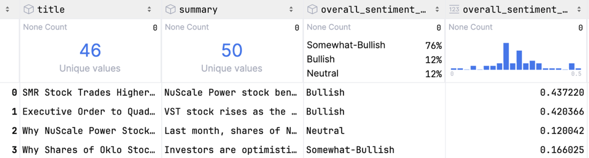
OpenBB integrates various asset classes beyond stocks. However, first, let’s demonstrate how to collect data using methods similar to those employed by other libraries. Using two lines, we collect technical data on a stock:
from openbb import obb
obb.equity.price.historical("NVDA").to_df().head()
As shown in table 3.11, our output is like that of other libraries that load technical data for stocks.
Note At the time of writing this book, the OpenBB library didn’t yet support the latest available Python version (3.13). Users who want to explore this library can use Python version 3.12.
|
Date
|
Open
|
High
|
Low
|
Close
|
Volume
|
|---|---|---|---|---|---|
| 2023-06-26 |
42.460999 |
42.76400 |
40.099998 |
40.632000 |
594,322,000 |
| 2023-06-27 |
40.799000 |
41.93999 |
40.448002 |
41.875999 |
4,621,750,000 |
| 2023-06-28 |
40.660000 |
41.845001 |
40.518002 |
41.117001 |
582,639,000 |
| 2023-06-29 |
41.557999 |
41.599998 |
40.599998 |
40.821999 |
380,514,000 |
| 2023-06-30 |
41.680000 |
42.549999 |
41.500999 |
42.301998 |
501,148,000 |
| Source: OpenBB |
Let’s focus on this API’s differentiator. The following code shows how to integrate multiple data providers into this API. We can work with various providers in theory, which increases our possibilities by allowing us to switch from one provider to another without requiring any code changes:
obb.equity.price.historical("NVDA", provider="yfinance").to_df().head()
But this doesn’t end here. So far, we’ve been focused on stock information, but as we learned in chapter 1, the financial universe consists of many assets. Let’s look at the following self-explanatory snippets:
obb.currency.price.historical("USDGBP").to_df().head()
obb.fixedincome.government.treasury_rates(
start_date="2024-01-02").to_df().dropna()
obb.crypto.price.historical("SOLUSD").to_df().tail()
Using this library, we also get access to other assets. OpenBB might be the best library for programmers who want to explore markets other than stocks; they could choose this library.
The Awesome Quant GitHub page at https://github.com/wilsonfreitas/awesome-quant provides a comprehensive list of alternatives for collecting financial data. However, rewriting the code can be time-consuming if we choose libraries and later find out that they don’t meet our expectations.
One parameter to see if the library meets today’s standards is the day of its last update. The PyPi web page is a commonly used repository for Python libraries and provides this information. All we need to do is look at the library’s page, as shown with yfinance here: https://pypi.org/project/yfinance/. We can see regular releases in the PyPI release History page.
Another source of information is a library’s GitHub repository, where the library’s source code is hosted. We can look for the dates of the most recent commits. Following is the link to the yfinance repository: https://github.com/ranaroussi/yfinance.
One rule of thumb is to use a library that has been updated within the past year. New Python versions are being released, and financial platforms are changing their interfaces. At some point, a library may become incompatible if nobody is left to maintain it. For that reason, we want libraries with multiple contributors. We should also compare libraries by the number of stars and forks and select more popular libraries, as this indicates a substantial likelihood of attracting new contributors.
We aim to filter the existing library repository to identify further possible limitations. Let’s set some further criteria:
For this book, we’ll focus as much as possible on yfinance. It’s the best-known API for investment analysis, and you’ll find tons of snippets and advice to extend the code you write.